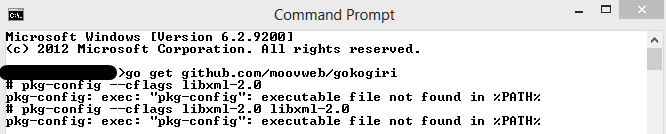
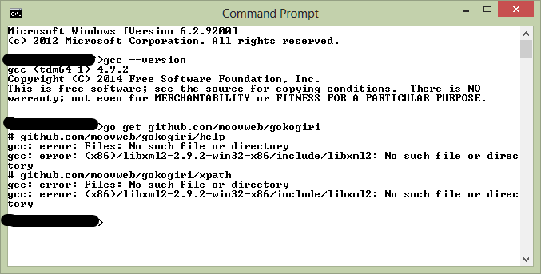

ошибка libxml2 не найдена при установке gokogiri на windows
Я пытаюсь установить gokogiri на машину Windows 8, следуя инструкциям на странице github :
Устанавливать:
- sudo apt-get install libxml2-dev
- go получить github.com/moovweb/gokogiri
пропуская первую команду (поскольку она недоступна на Windows), я получаю следующую ошибку :

На что жалуется ошибка? Должен ли я установить libxml-2.0 вручную перед повторной попыткой команды "go get"?
UPDATE :
Ниже приведены шаги, которые я сделал, каждый шаг основан на сообщении об ошибке, которое я получаю от повторной попытки команды go get после завершения предыдущего шага :
Загрузите
pkg-config_0.26-1_win32.zipотсюда , unzip/extract, и добавьте папкуbinв переменную средыpathНе загружайте
libxml2-2.9.2-win32-x86.7zотсюда , распакуйте. Создать новую переменную средыPKG_CONFIG_PATH,\lib\pkgconfigи добавить папку в libxml переменной ОКР.Не загружайте и устанавливайте tdm64-gcc отсюда
Теперь сообщение об ошибке выглядит следующим образом. Что мне делать дальше? Как правильно сделать, чтобы gcc знал о местоположении моих файлов libxml2?

go libxml2 gokogiri1 Ответ
1
у вас есть пространство на вашем пути к libxml.
Вариант 1: Удалите libxml и переустановите его по пути без пробелов (не программные файлы)
вариант 2 (может не работать для gcc) в переменной среды указывает на libxml (включая ваш путь) используйте кавычки вокруг имени path to libxml
Go lang: как установить libxml2/gokogiri на windows
Если есть относительно простой способ заставить go + libxml2 + gokogiri работать на windows? Я имею в виду, что я могу установить его (но на данный момент я не могу, застрял с Package libxml-2.0 was...
Получение "Could not find function xmlCheckVersion in library libxml2. Is libxml2 installed?" при установке lxml через pip
Я получаю ошибку Could not find function xmlCheckVersion in library libxml2. Is libxml2 installed? при попытке установить lxml через pip. c:\users\f\appdata\local\temp\xmlXPathInitqjzysz.c(1) :...
Добавление зависимости gokogiri вызывает выход `Killed: 9`
Среда, которую я использую, - это go1.8 на MacOS Sierra. Код: package main import ( fmt io/ioutil github.com/moovweb/gokogiri github.com/moovweb/gokogiri/xpath ) func main() { fmt.Println(hello...
Ошибки при установке XMLSec на Mac OS 10.6.8
Я хотел бы использовать библиотеку XMLSec в одном из моих приложений iOS. Я выполнил все инструкции, упомянутые на http://www.aleksey.com/xmlsec/download.html и загрузил все необходимые библиотеки и...
проблемы при установке libxml2 на linux
Я пытаюсь установить libxml2-2.9.1 на Ubuntu на виртуальной машине. Я следовал шагам из обеих ссылок, приведенных ниже: http://www.linuxfromscratch.org/blfs/view/svn/general/libxml2.html...
получение ошибки при установке libxml2
Я пытаюсь установить libxml2 для Python версии 2.7.3, но всякий раз, когда я пытаюсь установить его дает мне ошибку: не удалось найти заголовки для libxml2: update includes_dir В поисках обходного...
Как я могу разобрать xml с пространством имен, используя gokogiri (libxml2)?
Я использую github.com/moovweb/gokogiri для разбора документа XML. Следующее работает при разборе var b , но когда я пытаюсь сделать то же самое на var a (который имеет пространство имен), я не...
Служба CiSvc не найдена на сервере Windows Server 2012 при установке CRM 4.0
При установке CRM 4.0 на Windows Server 2012, я получаю сообщение об ошибке: Служба cisvc не была найдена на компьютере 'DVWEB03'. Указанная служба не существует как установленная служба Дело в том,...
Ошибка пути при установке react-native (команда не найдена ошибка)
Я пытаюсь установить react-native. Я выполнил все шаги здесь: https://facebook.github.io/react-native/docs/getting-started.html#content Когда я использую эту команду : react-native newProject Я...
Как связать libxml2 с zlib1 на Windows?
Мне нужно скомпилировать 32-битные и 64-битные двоичные файлы libxml2 для моего плагина TeamSpeak 3 , потому что я не смог найти 64-битную загрузку dll/lib. Когда я использую свой скомпилированный...